Combinacional × Sequencial: a ideia de memória
1.1 Revisão relâmpago: bits e portas lógicas
Em sistemas digitais, todo sinal é tratado como apenas dois níveis: 0 (baixo, ~0 V) e 1 (alto, ~5 V ou 3,3 V). As portas lógicas são os “tijolos”: recebem bits e produzem um bit. Para este curso, duas portas merecem atenção especial, porque é com elas que se constrói a memória:
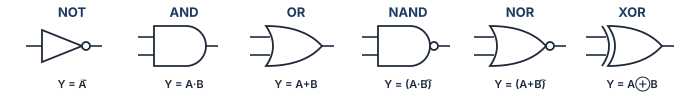
| A | B | NOR |
|---|---|---|
| 0 | 0 | 1 |
| 0 | 1 | 0 |
| 1 | 0 | 0 |
| 1 | 1 | 0 |
| A | B | NAND |
|---|---|---|
| 0 | 0 | 1 |
| 0 | 1 | 1 |
| 1 | 0 | 1 |
| 1 | 1 | 0 |
Guarde estas duas frases, porque elas explicam sozinhas os latches do Capítulo 2: “1 manda na NOR” (força 0) e “0 manda na NAND” (força 1).
1.2 Circuitos combinacionais: sem memória
Em um circuito combinacional, a saída em um instante depende apenas da combinação das entradas naquele instante. É o mundo da álgebra de Boole e dos mapas de Karnaugh: somadores, multiplexadores, decodificadores. Se você aplicar as mesmas entradas amanhã, a saída será a mesma. O circuito não tem passado.
1.3 O problema que o combinacional não resolve
Exemplo da aula: observe uma fileira de 3 lâmpadas que acendem uma de cada vez. Se elas acenderem na sequência 1 → 2 → 3, um alarme deve tocar.
Uma função combinacional olharia só para “lâmpada 3 acesa” e não teria como distinguir “1, 2, 3” de “2, 1, 3”. O circuito precisa guardar informação sobre o que já aconteceu, ou seja, precisa de memória. Esse é o mundo dos circuitos sequenciais.
1.4 Circuitos sequenciais: memória + realimentação
Nos circuitos sequenciais, as saídas dependem das entradas presentes e também da história das entradas no passado, isto é, da sequência de valores que levou até o momento atual. Para isso eles têm duas coisas que o combinacional não tem: elementos de memória e realimentação (a saída volta para a entrada).
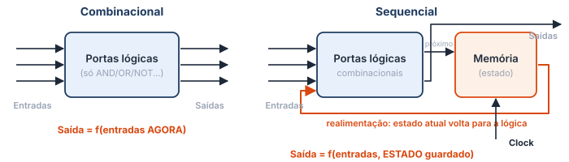
A estrutura geral de qualquer circuito sequencial (vale para tudo até o fim do curso) tem duas partes:
- Elementos de memória (flip-flops): suas saídas definem o estado presente; suas entradas recebem o próximo estado.
- Portas lógicas combinacionais: calculam qual é o próximo estado e qual é a saída, a partir do estado presente e das entradas.
1.5 Estado e clock
Estado é cada estágio por onde o circuito sequencial passa. Em cada estado o circuito guarda uma “recordação” da história passada, suficiente para saber o que fazer a seguir. No exemplo das lâmpadas, bastam quatro estados: “nada relevante ainda”, “vi a 1”, “vi a 1 e depois a 2” e “alarme”. Não é preciso lembrar da história inteira, só do que importa para a decisão.
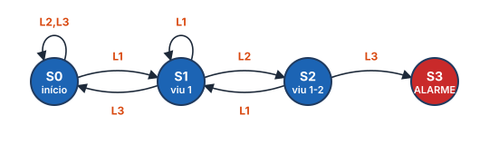
A maioria dos sistemas sequenciais é pulsada (síncrona): o estado só é atualizado no ritmo de um sinal periódico chamado clock (relógio). O clock funciona como um maestro que diz “agora!” a todos os elementos de memória ao mesmo tempo. O Capítulo 3 trata do clock em detalhe.
1.6 Classificação pelo número de estados estáveis
| Tipo | Estados estáveis | Comportamento | Exemplo |
|---|---|---|---|
| Astável | nenhum | muda de estado sozinho, o tempo todo, sem estímulo externo | oscilador, gerador de clock |
| Monoestável | um (repouso) | um sinal externo o tira do repouso; volta sozinho depois de um tempo fixo | temporizador (ex.: luz de escada) |
| Biestável | dois (repouso e ativo) | só muda de estado com sinal externo; fica onde foi colocado | latches e flip-flops |
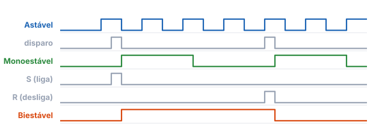
Um biestável guarda exatamente 1 bit. Latches e flip-flops são biestáveis e são os blocos básicos de toda memória digital.
Latch: a saída pode mudar a qualquer instante, assim que as entradas mudam (circuito assíncrono). Flip-flop: a saída só muda em instantes determinados pelo clock (circuito síncrono).
Classifique como combinacional ou sequencial: (a) somador de 4 bits; (b) contador de pessoas que entram numa loja; (c) display que mostra em 7 segmentos o número binário da entrada; (d) fechadura que abre após digitar 4-7-2.
Latches: o primeiro bit de memória
2.1 O que é um latch
O latch (“trinco”) é o biestável mais simples. Ele tem duas saídas complementares, Q e Q (lê-se “Q barrado”), e duas entradas de comando:
- SET (S): “ligue”, que leva a Q = 1 (estado ALTO, ou estado SET).
- RESET (R), também chamado CLEAR: “desligue”, que leva a Q = 0 (estado BAIXO, ou estado RESET).
Quando nenhum comando é dado, o latch mantém o último valor: isso é a memória. Como reage a mudanças das entradas a qualquer momento (com um pequeno atraso), o latch é um circuito assíncrono.
2.2 Latch RS positivo (com portas NOR)
“Positivo” significa que as entradas são ativas em nível alto: o comando é dado colocando 1.
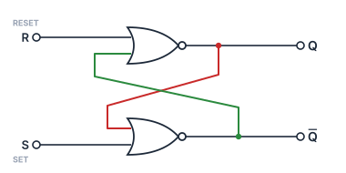
| R | S | Saída |
|---|---|---|
| 0 | 0 | não muda (memória) |
| 1 | 0 | Q = 0, Q = 1 (reset) |
| 0 | 1 | Q = 1, Q = 0 (set) |
| 1 | 1 | inválida |
Apertar S é como apertar “liga”; R é “desliga”. Soltando os dois, a lâmpada fica como estava. Apertar os dois ao mesmo tempo é uma ordem contraditória.
Por que funciona? Seguindo os sinais
Use a regra “1 manda na NOR” (força a saída para 0):
- Set (S=1, R=0). A porta de baixo tem um 1 (o S), então Q = 0. A porta de cima recebe R = 0 e Q = 0, então Q = NOR(0,0) = 1.
- Solta (S=0, R=0). A porta de baixo agora recebe S = 0 e Q = 1 (realimentado), então continua com Q = 0. A de cima continua com 0 e 0, então Q = 1. O circuito se sustenta sozinho: lembrou do set.
- Reset (R=1, S=0). O 1 em R força Q = 0. A de baixo recebe 0 e 0, então Q = 1. Soltando R, a situação também se sustenta.
- Inválido (S=1, R=1). As duas portas têm um 1 na entrada, então Q = Q = 0. As saídas deixam de ser complementares. Pior: se S e R voltarem a 0 ao mesmo tempo, as duas portas “disputam” (condição de corrida) e o resultado é imprevisível.
2.3 Latch RS negativo (com portas NAND)
“Negativo” significa entradas ativas em nível baixo: o comando é dado colocando 0. Por isso as entradas são escritas com barra: S e R. A regra agora é “0 manda na NAND” (força a saída para 1).
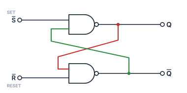
| S | R | Saída |
|---|---|---|
| 1 | 1 | não muda (memória) |
| 0 | 1 | Q = 1, Q = 0 (set) |
| 1 | 0 | Q = 0, Q = 1 (reset) |
| 0 | 0 | inválida (Q = Q = 1) |
- Nos slides, a tabela do latch positivo tem a coluna RESET primeiro e a do negativo tem SET primeiro. Leia o cabeçalho antes de usar.
- Positivo (NOR): repouso = 00, inválido = 11. Negativo (NAND): repouso = 11, inválido = 00. Um é o “espelho” do outro.
- No estado inválido, o NOR dá Q = Q = 0; o NAND dá Q = Q = 1.
2.4 Desenhando formas de onda (o exercício clássico)
Na prova, é comum receber os sinais S e R ao longo do tempo e ter que desenhar Q e Q. O método:
- Trace linhas verticais em todo instante em que S ou R muda. Entre duas linhas, as entradas são constantes.
- Para cada intervalo, consulte a tabela: set, reset, mantém ou inválido.
- Em “mantém”, copie o valor do intervalo anterior. Para isso, você precisa saber o estado inicial (geralmente Q = 0, ou ele é dado).
- Desenhe Q como o inverso de Q (exceto no inválido).
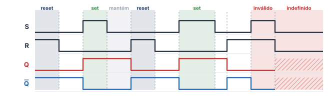
Leitura: começa com R = 1, então Q = 0. Em seguida S = R = 0: mantém 0. S = 1: Q vai a 1. S volta a 0: mantém 1. R = 1: Q volta a 0, e assim por diante. Note que, depois do set, o pulso de S termina mas Q continua em 1: é a memória funcionando.
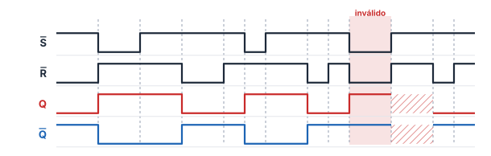
2.5 Aplicações vistas em aula
Alarme com fototransistor
Um feixe de luz incide num fototransistor. Ao ligar o circuito, aperta-se a chave SW1 para colocar o latch em reset (alarme desligado). Se alguém interromper o feixe, o fototransistor para de conduzir e o nível lógico gerado aciona o SET: o alarme dispara. O ponto importante é que, mesmo que o feixe volte, o latch continua em set e o alarme só desliga quando SW1 é pressionada de novo. A memória “lembra” que houve uma invasão.
Eliminação de trepidação (debounce)
Chaves mecânicas não fecham de uma vez: os contatos “quicam” por alguns milissegundos e geram variações indesejadas da tensão (trepidação ou bounce). Um contador ligado a essa chave contaria vários pulsos em vez de um.
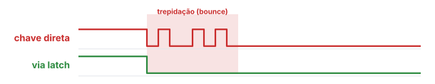
Montagem típica: chave de duas posições (SPDT) ligada a um latch NAND, com a posição 1 aterrando S e a posição 2 aterrando R, e resistores de pull-up mantendo as entradas em 1 quando soltas.
Desenhe Q e Q para o latch RS positivo (NOR), com Q inicial = 0:
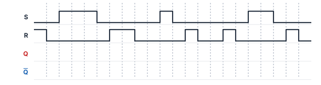
(a) Por que o latch é chamado de “assíncrono”? (b) Em que diferem o estado inválido do latch NOR e o do latch NAND? (c) Por que o latch serve como memória de 1 bit?
Tempo, pulsos e clock
3.1 Pulsos e bordas
Um pulso digital é um sinal que passa de um nível para o outro e depois volta, realizando uma ação no dispositivo. Há pulsos positivos (a ação acontece no nível alto) e pulsos negativos (a ação acontece no nível baixo). Cada pulso tem duas transições (ou bordas):
- Borda de subida (↑, rising edge): baixo → alto.
- Borda de descida (↓, falling edge): alto → baixo.
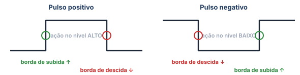
3.2 O clock
O clock é um trem de pulsos com período fixo, normalmente uma onda quadrada. Ele dita o ritmo do sistema.
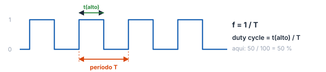
Um clock de 20 MHz tem período T = 1 / (20 × 10⁶) = 50 ns. Se fica 15 ns em alto, o duty cycle é 15/50 = 30%.
3.3 Parâmetros de um pulso real
Na prática, as bordas não são verticais: o sinal leva algum tempo para subir e descer. Para medir isso sem ambiguidade, usam-se porcentagens da amplitude:
- Tempo de subida (tr, rise time) e tempo de descida (tf, fall time): tempo para ir de 10% a 90% da transição.
- Largura do pulso (tw, pulse width): tempo entre os pontos de 50% da borda de subida e da de descida.
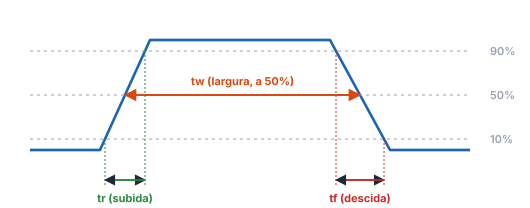
3.4 Parâmetros de temporização de flip-flops
Estes parâmetros se aplicam aos flip-flops do próximo capítulo. Eles explicam por que o circuito pode falhar se for rápido demais.
Setup e hold: a janela em que a entrada não pode mudar
- Tempo de preparação (setup time, tS): intervalo antes da borda ativa do clock em que a entrada de controle (D, J, K...) deve estar estável.
- Tempo de manutenção (hold time, tH): intervalo depois da borda em que a entrada ainda deve ficar estável.
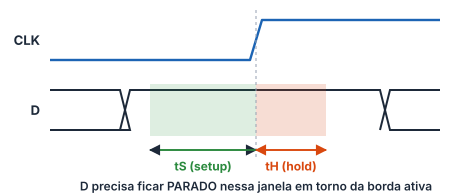
A borda do clock é o clique de uma câmera. Se a pessoa se mexer bem na hora (dentro da janela), a foto sai borrada. tS é “fique parado um pouco antes do clique” e tH é “continue parado um pouco depois”.
Atrasos de propagação
É o tempo entre a borda do clock (ou a mudança da entrada) e a mudança correspondente na saída:
- tPLH: atraso quando a saída vai de 0 para 1 (Low → High).
- tPHL: atraso quando a saída vai de 1 para 0 (High → Low).
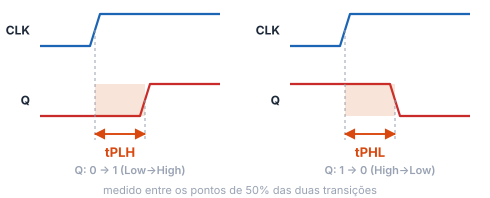
Outros limites
- fMAX: maior frequência de clock em que o fabricante garante funcionamento confiável.
- tW(L) e tW(H): tempo mínimo em que o clock deve permanecer em nível baixo e em nível alto.
Valores reais (datasheets citados na aula)
| Parâmetro | TTL 7474 | TTL 74LS112 | CMOS 74C74 | CMOS 74HC112 |
|---|---|---|---|---|
| tS (ns) | 20 | 20 | 60 | 25 |
| tH (ns) | 5 | 0 | 0 | 0 |
| tPHL (ns) | 40 | 24 | 200 | 31 |
| tPLH (ns) | 25 | 16 | 200 | 31 |
| tW(L) (ns) | 37 | 15 | 100 | 25 |
| tW(H) (ns) | 30 | 20 | 100 | 25 |
| fMAX (MHz) | 15 | 30 | 5 | 20 |
Os números estão ligados. Num ciclo de clock cabem, no mínimo, o tempo em alto e o tempo em baixo: para o 74LS112, tW(H) + tW(L) = 20 + 15 = 35 ns, o que daria ~28,6 MHz, perto do fMAX = 30 MHz da tabela. Em circuitos com vários flip-flops, o período também precisa acomodar tPD do FF + atraso da lógica entre FFs + tS do FF seguinte. É por isso que contadores síncronos (Cap. 6) são mais rápidos que os assíncronos (Cap. 5).
Simuladores lógicos como o LogiSIM em geral não mostram tS, tH, tr e tf, porque tratam as bordas como instantâneas (no máximo modelam um atraso de porta). Esse é o ponto do Exercício 1 da Aula 02. Simuladores elétricos (como o Falstad) chegam mais perto do comportamento real.
(a) Qual o período de um clock de 30 MHz? (b) Um pulso tem tw = 12 ns num período de 40 ns: qual o duty cycle? (c) Um flip-flop tem tS = 20 ns e tH = 5 ns. A entrada D muda 10 ns antes da borda. Há problema?
Flip-flops
4.1 Do latch ao flip-flop: nível × borda
O latch obedece às entradas o tempo todo. Em um sistema grande isso é um problema: sinais chegam em tempos diferentes, passam por estados intermediários e o latch “vê” tudo. Queremos que os elementos de memória só olhem as entradas em um instante preciso e combinado. Esse instante é a borda do clock.
- Sensível a nível (latch com habilitação): enquanto o clock está em 1, a saída segue a entrada (o latch fica “transparente”).
- Sensível a borda (flip-flop): a saída só pode mudar no instante da borda (↑ ou ↓). Fora dela, mudanças nas entradas são ignoradas.
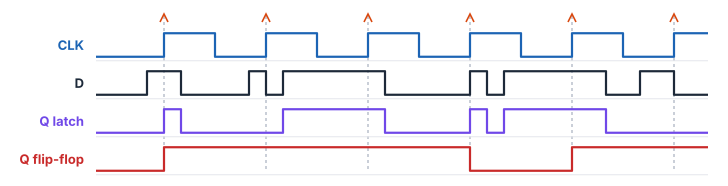
Flip-flop = circuito síncrono: quando a saída muda é decidido pelo clock; para qual valor ela muda é decidido pelas entradas de controle.
Como se constrói a sensibilidade à borda
Uma forma didática (a dos circuitos da aula) é usar um detector de borda: uma AND recebe o CLK e o CLK invertido e atrasado por uma porta NOT. Por um instante muito curto, igual ao atraso da NOT, as duas entradas valem 1 e sai um pulso estreito. Esse pulso habilita o latch só “no instante” da borda.

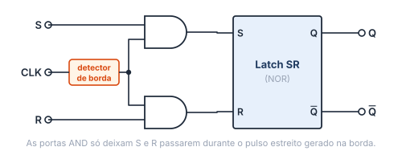
Lendo o símbolo
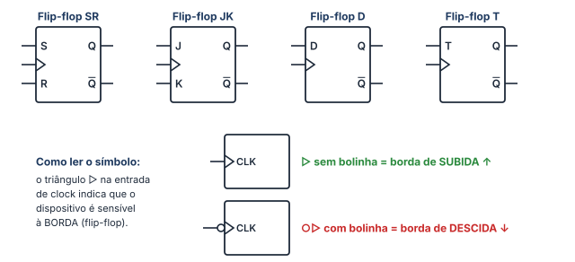
4.2 Flip-flop RS
É o latch RS com clock. Não tem versões comerciais (por causa do estado inválido), mas é a base teórica dos outros.
| S | R | CLK | Q depois da borda |
|---|---|---|---|
| 0 | 0 | ↑ | não muda |
| 1 | 0 | ↑ | Q = 1 |
| 0 | 1 | ↑ | Q = 0 |
| 1 | 1 | ↑ | inválido |
4.3 Flip-flop JK: o RS sem estado inválido
O JK é um RS melhorado: J faz o papel de S, K faz o papel de R, e a combinação J = K = 1, que era proibida, vira útil: a saída comuta (inverte, toggle). Isso é obtido realimentando Q e Q para as portas de entrada, de modo que só a entrada “que faz sentido” fica ativa: se Q = 1, só o K pode agir (para resetar); se Q = 0, só o J (para setar).
| J | K | CLK | Q depois da borda | Nome |
|---|---|---|---|---|
| 0 | 0 | ↑ | Q (não muda) | mantém |
| 1 | 0 | ↑ | 1 | set |
| 0 | 1 | ↑ | 0 | reset |
| 1 | 1 | ↑ | Q (inverte) | comuta |
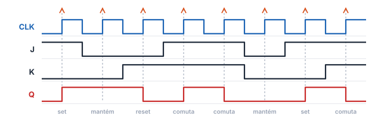
Equação característica (útil para projeto): Qpróximo = J·Q + K·Q.
4.4 Flip-flop D (Data / Delay)
O mais simples e o mais usado: na borda, a saída copia a entrada D.
| D | CLK | Q |
|---|---|---|
| 0 | ↑ | 0 |
| 1 | ↑ | 1 |
Qpróximo = D. O D “atrasa” a entrada até a próxima borda e a segura por um ciclo inteiro. É o tijolo dos registradores e das memórias (Caps. 7 e 8).
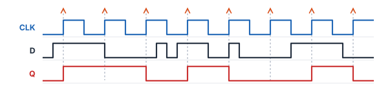
4.5 Flip-flop T (Toggle)
Com T = 1 a saída comuta a cada borda; com T = 0 ela mantém.
| T | CLK | Q |
|---|---|---|
| 0 | ↑ | mantém |
| 1 | ↑ | comuta |
Qpróximo = T ⊕ Q. Com T = 1 fixo, Q tem metade da frequência do clock: é um divisor de frequência por 2 e o tijolo dos contadores (Caps. 5 e 6).
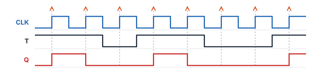
4.6 Convertendo um flip-flop em outro
Os slides mostram que o D pode ser obtido do RS ou do JK, e o T pode ser obtido do RS/JK ou do D:
- D a partir do JK (ou RS): J = D e K = D (uma NOT). Assim só ocorrem os casos set (D=1) e reset (D=0), nunca “mantém” nem “inválido”.
- T a partir do JK: ligue J = K = T. Com T = 0 mantém; com T = 1 comuta.
- T a partir do D: D = T ⊕ Q (uma XOR com realimentação).
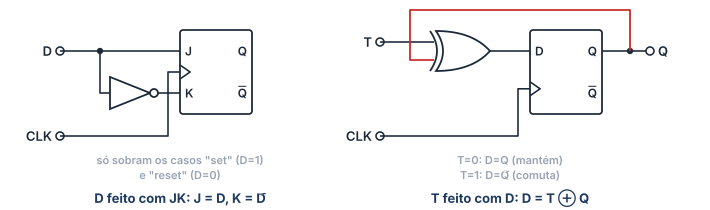
4.7 Flip-flops comerciais: PRE e CLR assíncronos
CIs reais (como o 74LS112, JK com borda de descida) têm duas entradas extras que ignoram o clock:
- PRE (preset): força Q = 1 imediatamente.
- CLR (clear): força Q = 0 imediatamente.
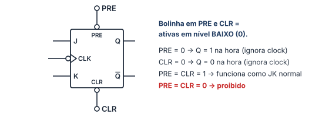
| J | K | CLK | PRE | CLR | Q |
|---|---|---|---|---|---|
| 0 | 0 | ↓ | 1 | 1 | não muda |
| 0 | 1 | ↓ | 1 | 1 | 0 |
| 1 | 0 | ↓ | 1 | 1 | 1 |
| 1 | 1 | ↓ | 1 | 1 | comuta |
| X | X | X | 1 | 1 | não muda (sem borda) |
| X | X | X | 1 | 0 | clear assíncrono → Q = 0 |
| X | X | X | 0 | 1 | preset assíncrono → Q = 1 |
| X | X | X | 0 | 0 | inválido |
Prioridade: entradas assíncronas (PRE/CLR) vencem o clock. Enquanto CLR = 0, Q = 0, aconteça o que acontecer com J, K e CLK. “X” na tabela significa “tanto faz”. É assim que se zera um contador (Cap. 5) e se carrega um registrador sem clock (Cap. 7).
- Verifique sempre qual borda o FF usa (bolinha no clock = descida) e se PRE/CLR são ativos em 0 (bolinha) ou em 1.
- “Mantém” do T e do JK é em relação ao valor antes da borda, e “comuta” inverte esse valor.
- As entradas valem pelo que eram imediatamente antes da borda (respeitando tS).
4.8 Usos principais
| Tipo | Usos típicos |
|---|---|
| D | registradores, armazenamento de dados, memórias SRAM, sincronizar um sinal externo com o clock, registradores de deslocamento |
| T | divisores de frequência, contadores (assíncronos e síncronos) |
| JK | “curinga”: vira D ou T com ligações simples; usado em contadores e em MEFs |
| RS | base teórica; latch RS para debounce e alarmes |
JK com borda de descida e CLR assíncrono (ativo em 0), Q inicial = 0. Desenhe Q.
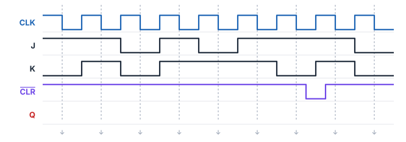
(a) Um FF T com T = 1 recebe um clock de 8 MHz. Qual a frequência de Q? (b) Como transformar um JK em T? E em D? (c) Por que o FF RS não tem versão comercial?
Contadores assíncronos
5.1 O que é um contador
Contadores são circuitos que geram uma sequência determinada de estados sob o comando de um clock. Usos citados em aula: contar pulsos de chaves e sensores, construir temporizadores e relógios digitais, gerar sequências de pulsos e medir frequência.
Um contador de n flip-flops tem até 2ⁿ estados. O número de estados distintos que ele percorre antes de repetir chama-se módulo (MOD). Um contador de 0 a 15 é MOD-16; um de 0 a 9 é MOD-10.
5.2 Assíncrono = “efeito dominó”
No contador assíncrono (ou ripple counter), o clock externo entra apenas no primeiro flip-flop. O clock de cada flip-flop seguinte é a saída do anterior.
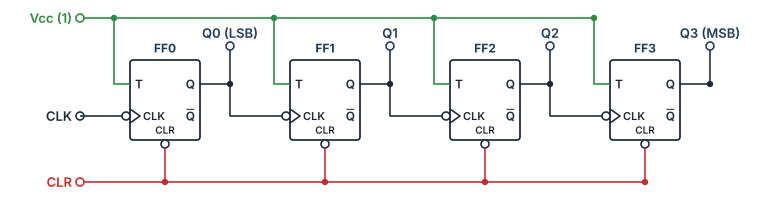
Funcionamento passo a passo
- Aplica-se 0 na linha CLR: todos os FFs vão para Q = 0, e o contador mostra 0000.
- Com T = 1, cada FF comuta quando recebe uma borda de descida no seu clock.
- A cada descida do CLK, o FF0 comuta. A cada descida de Q0 (quando Q0 vai de 1 para 0), o FF1 comuta. A cada descida de Q1, comuta o FF2, e assim por diante.
- Lendo Q3 Q2 Q1 Q0 (Q0 = LSB, Q3 = MSB), a saída percorre 0000, 0001, 0010, …, 1111 e, após a 16ª descida, volta a 0000.
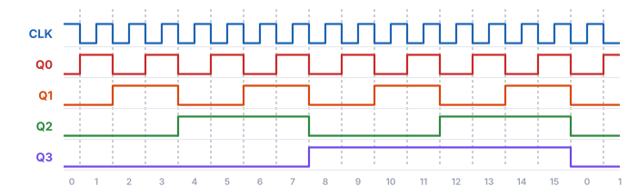
Some 1 em binário à mão: o bit 0 sempre inverte; o bit 1 inverte quando o bit 0 “vira” de 1 para 0 (gera “vai-um”); o bit 2 inverte quando o bit 1 vira de 1 para 0, e assim por diante. “Vira de 1 para 0” é uma borda de descida. Por isso FFs T disparados pela borda de descida da saída anterior contam para cima.
5.3 Divisor de frequência
Cada FF T com T = 1 divide a frequência por 2. Encadeando:
| Saída | Período | Frequência |
|---|---|---|
| CLK | T | f |
| Q0 | 2T | f/2 |
| Q1 | 4T | f/4 |
| Q2 | 8T | f/8 |
| Q3 | 16T | f/16 |
Um contador de 4 bits recebe clock de 32 kHz. Frequência de Q3 = 32 kHz / 16 = 2 kHz. Frequência de Q1 = 32 / 4 = 8 kHz.
5.4 Contador de módulo N (contar de 0 até n)
E se quisermos contar só de 0 até n, com n + 1 < 2ⁿ? A técnica da aula é: detectar o estado seguinte a n (que é N = n + 1) e, nesse instante, aplicar 0 no CLR, zerando tudo.
- Número de FFs: o menor k com 2ᵏ ≥ N.
- Escreva o estado proibido N = n + 1 em binário.
- Ligue numa NAND as saídas Q que valem 1 nesse número. Basta usar as que, na sequência de contagem, ficam em 1 simultaneamente pela primeira vez em N.
- Ligue a saída da NAND na linha CLR de todos os FFs.
Quando o contador chega em N, todas as entradas da NAND valem 1, a NAND vai a 0 e o CLR zera tudo. Como o clear é assíncrono, isso acontece quase instantaneamente.
Estado seguinte a 5: 6 = 0110 (Q3=0, Q2=1, Q1=1, Q0=0). As saídas em 1 são Q2 e Q1. Na sequência 0…5, Q2 e Q1 nunca valem 1 ao mesmo tempo (5 = 0101, 3 = 0011), então NAND(Q2, Q1) só dispara em 6.
- Com 4 FFs: a mesma NAND(Q2, Q1). O FF3 nunca chega a 1, só sobra.
- Com 3 FFs (2³ = 8 ≥ 6): NAND(Q2, Q1) em 3 bits, 110. É a solução econômica.
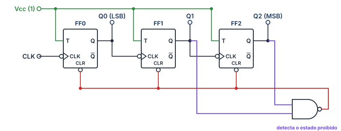
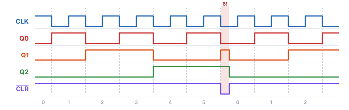
4 FFs (2⁴ = 16 ≥ 10). Estado seguinte a 9: 10 = 1010, então ligue Q3 e Q1 numa NAND. Ele segue o código BCD (0000 a 1001) e serve como divisor por 10.
| Pulso | Q3 | Q2 | Q1 | Q0 | CLR |
|---|---|---|---|---|---|
| 0 | 0 | 0 | 0 | 0 | 1 |
| 1 | 0 | 0 | 0 | 1 | 1 |
| … | … | 1 | |||
| 8 | 1 | 0 | 0 | 0 | 1 |
| 9 | 1 | 0 | 0 | 1 | 1 |
| 10 | 1 | 0 | 1 | 0 | 0 → zera |
- A NAND detecta o número seguinte ao último que se quer mostrar (n + 1), e não o próprio n.
- Só entram na NAND os bits que são 1 em N. Os bits 0 ficam de fora.
- O CLR é ativo em 0, e é por isso que se usa NAND (que dá 0 quando todas as entradas são 1). Se o CLR fosse ativo em 1, seria uma AND.
- O MSB de um MOD-N tem frequência f/N, mas, se N não for potência de 2, o duty cycle não é 50%.
5.5 Contagem decrescente
O circuito é o mesmo. A contagem decrescente é o complemento da crescente: basta ler as saídas Q em vez de Q. Se Q3Q2Q1Q0 = 0000, então Q3Q2Q1Q0 = 1111 (15); quando Q vira 0001, Q vira 1110 (14), e assim por diante.
| Q (crescente) | 0000 | 0001 | 0010 | 0011 | … | 1111 |
|---|---|---|---|---|---|---|
| Q (decrescente) | 1111 = 15 | 1110 = 14 | 1101 = 13 | 1100 = 12 | … | 0000 = 0 |
O estado inicial 1111 (lendo Q) é obtido aplicando 0 no CLR, que zera Q.
Também dá para contar para baixo lendo Q, mudando a ligação: (a) FFs de borda de descida com o clock de cada estágio vindo de Q do anterior, ou (b) FFs de borda de subida com o clock vindo de Q do anterior. A regra geral: o estágio seguinte deve comutar quando o anterior vai de 0 para 1 (o “empresta-um” da subtração).
5.6 A limitação do assíncrono
Como cada FF só muda depois que o anterior mudou, os atrasos de propagação se somam. Na transição 0111 → 1000, Q0 muda após 1 tPD, Q1 após 2, Q2 após 3 e Q3 após 4. Nesse meio-tempo, a saída passa por valores falsos (0110, 0100, 0000). Com muitos bits ou clock rápido, a contagem não termina antes da próxima borda.
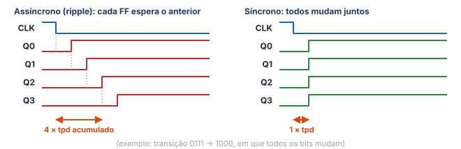
Contador assíncrono de 4 bits com 74LS112 (tPD máx. = 24 ns). Atraso total = 4 × 24 = 96 ns. Para a saída ficar estável antes da próxima borda, T > 96 ns, ou seja, f < ~10,4 MHz, bem abaixo dos 30 MHz que um FF isolado aguenta.
- Projete um contador assíncrono MOD-3, crescente e decrescente.
- Projete um contador assíncrono MOD-12, crescente e decrescente.
- Com clock de 50 MHz, quantos FFs seriam necessários para baixar a frequência a 1 Hz?
- E usando contadores de década?
Contadores síncronos
6.1 Definição
No contador síncrono, o CLK é ligado em todos os flip-flops ao mesmo tempo. Todos mudam juntos, sem dominó. Em troca, como nenhum FF “espera” o anterior, é preciso lógica adicional que diga a cada FF se ele deve comutar nesta borda. Por serem mais rápidos e livres de glitches de ripple, são usados em circuitos de alta velocidade.
6.2 Derivando o contador MOD-8 com FFs T
Olhe a sequência e pergunte, para cada bit: quando ele comuta?
| Estado | Q2 | Q1 | Q0 |
|---|---|---|---|
| 0 | 0 | 0 | 0 |
| 1 | 0 | 0 | 1 |
| 2 | 0 | 1 | 0 |
| 3 | 0 | 1 | 1 |
| 4 | 1 | 0 | 0 |
| 5 | 1 | 0 | 1 |
| 6 | 1 | 1 | 0 |
| 7 | 1 | 1 | 1 |
- Q0 comuta sempre, então T0 = 1.
- Q1 comuta quando o estado anterior tem Q0 = 1 (1→2, 3→4, 5→6, 7→0), então T1 = Q0.
- Q2 comuta quando Q0 = 1 e Q1 = 1 (3→4, 7→0), então T2 = Q1 · Q0.
Ti = Q0 · Q1 · … · Qi−1: um bit comuta quando todos os bits abaixo dele valem 1.
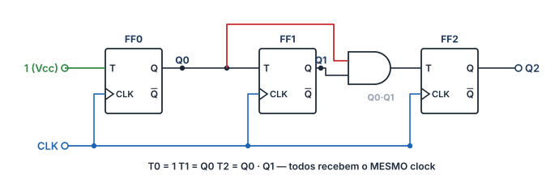
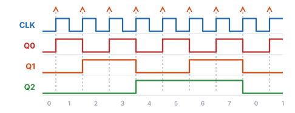
6.3 Assíncrono × síncrono
| Característica | Assíncrono (ripple) | Síncrono |
|---|---|---|
| Clock | só no 1º FF; os demais recebem Q do anterior | em todos os FFs |
| Lógica extra | nenhuma (T = 1) | ANDs que calculam os Ti |
| Atraso | acumula: N × tPD | 1 × tPD + lógica + tS |
| Estados intermediários falsos | sim (glitches) | não |
| Velocidade | menor | maior (alta velocidade) |
| Projeto | simples | mais trabalhoso (mas sistemático) |
6.4 Método geral de projeto (vale para qualquer sequência)
O raciocínio “quando o bit comuta?” funciona para qualquer sequência, não só a binária. O método formal usa a tabela de excitação, que é a tabela do FF “ao contrário”: dado que quero ir de Q para Qpróximo, que entrada devo aplicar?
| Q → Qpróx | D | T | J K | S R |
|---|---|---|---|---|
| 0 → 0 | 0 | 0 | 0 X | 0 X |
| 0 → 1 | 1 | 1 | 1 X | 1 0 |
| 1 → 0 | 0 | 1 | X 1 | 0 1 |
| 1 → 1 | 1 | 0 | X 0 | X 0 |
X = “tanto faz” (don’t care). Ex.: para ir de 0 a 1 no JK, J tem que ser 1; K pode ser 0 (set) ou 1 (comuta), dá no mesmo.
- Liste os estados na ordem desejada (estado atual → próximo).
- Para cada bit, use a tabela de excitação do FF escolhido e encontre a entrada necessária.
- Estados que nunca ocorrem viram don’t care (X).
- Simplifique cada entrada com mapa de Karnaugh e desenhe o circuito.
| Atual Q2Q1Q0 | Próximo | T2 | T1 | T0 |
|---|---|---|---|---|
| 000 (0) | 001 | 0 | 0 | 1 |
| 001 (1) | 010 | 0 | 1 | 1 |
| 010 (2) | 011 | 0 | 0 | 1 |
| 011 (3) | 100 | 1 | 1 | 1 |
| 100 (4) | 000 | 1 | 0 | 0 |
| 101, 110, 111 | — | X | X | X |
(T = 1 onde o bit muda; compare coluna a coluna.) Simplificando, com os X ajudando:
- T0 = Q2 (T0 é 1 em 0–3 e 0 em 4)
- T1 = Q0 (1 só nos estados 1 e 3)
- T2 = Q2 + Q1·Q0 (1 nos estados 3 e 4)
Conferência: no estado 4 (100), T2T1T0 = 100, então só Q2 comuta e o próximo é 000. ✔
6.5 Recursos práticos (perguntas da Aula 05)
- O síncrono serve de divisor de frequência? Sim: o bit Qi de um contador binário tem frequência f/2i+1, igual ao assíncrono, só que sem atraso acumulado.
- Como forçar um número (ex.: 1101) sem contar? Use as entradas assíncronas: PRE = 0 nos FFs que devem ser 1 e CLR = 0 nos que devem ser 0. (CIs contadores comerciais também têm uma entrada de carga paralela síncrona, LOAD.)
- Como interromper a contagem? Acrescente uma entrada de habilitação EN: T0 = EN e Ti = EN · Q0···Qi−1. Com EN = 0, todos os T = 0 e o contador “congela”. Evite bloquear o próprio clock com portas, porque isso cria atrasos e glitches no clock.
(a) Escreva as equações T de um contador síncrono crescente de 5 bits. (b) Projete um contador síncrono com FFs T que conte 0, 2, 4, 6, 0, … (só pares, 3 bits). (c) Qual a vantagem do síncrono para um contador de 16 bits?
Registradores
7.1 Definição
O uso mais comum de flip-flops é armazenar dados binários. Como um FF guarda só 1 bit, agrupam-se vários: um registrador é um grupo de FFs tipo D que armazena e transfere uma palavra. Registrador de n bits = n flip-flops.
7.2 Registrador de carga paralela
Sem sinal de carga
Cada bit Di entra no seu FF e todos compartilham o CLK. Na borda, a palavra inteira é copiada simultaneamente.
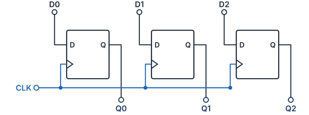
Com sinal de carga (LOAD)
No circuito anterior, todo pulso de clock sobrescreve o conteúdo. Em sistemas reais o clock não para, então é preciso decidir quando carregar. Solução: um multiplexador antes de cada D.
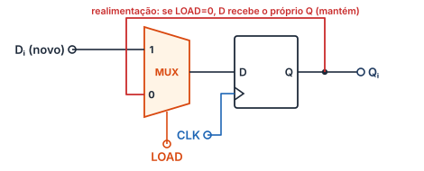
Com LOAD = 1 o FF recebe o dado novo; com LOAD = 0 recebe o próprio Q e “recarrega” o mesmo valor, ou seja, mantém. O clock continua livre e comum a todos.
7.3 Transferência entre registradores
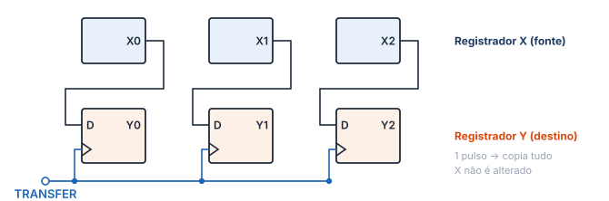
A transferência paralela não altera o conteúdo da fonte (X continua igual). É uma cópia, não uma mudança de lugar.
| Parâmetro | Paralela | Série |
|---|---|---|
| Transmissão de N bits | simultânea (1 pulso) | N pulsos |
| Conexões para N bits | N fios | 1 fio |
| Velocidade | maior | menor |
7.4 Registrador de deslocamento (shift register)
Os FFs são ligados em fila: Q de um vai no D do seguinte. O dado entra por Din, um bit por pulso. A cada borda (aqui, de descida), cada FF assume o valor que o FF à sua esquerda tinha antes.
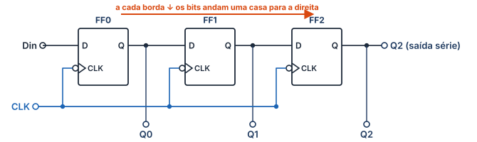
Os bits entram a partir do MSB: primeiro 1, depois 1, depois 0. D0 = Din, D1 = Q0, D2 = Q1.
| CLK | D0 (Din) | D1 | D2 | Q0 | Q1 | Q2 |
|---|---|---|---|---|---|---|
| início | 1 | 0 | 0 | 0 | 0 | 0 |
| 1ª ↓ | 1 | 1 | 0 | 1 | 0 | 0 |
| 2ª ↓ | 0 | 1 | 1 | 1 | 1 | 0 |
| 3ª ↓ | x | 0 | 1 | 0 | 1 | 1 |
Depois de 3 pulsos, Q2 Q1 Q0 = 1 1 0: o dado está inteiro no registrador. Truque para montar a tabela: as colunas D de uma linha são exatamente os Q da linha seguinte.
Para carregar n bits em série são necessários n pulsos de clock (e n FFs).
7.5 Conversores série ↔ paralelo
Série → paralelo
É o próprio registrador de deslocamento: os bits entram um por um em Din e, após n pulsos, a palavra está disponível ao mesmo tempo em Qn−1…Q0. Exemplo: receber um byte por um fio serial e entregá-lo a um barramento de 8 fios.
Paralelo → série
Precisa de FFs com PRE e CLR. A palavra é carregada de uma vez pelos PRE (sem clock) e depois deslocada para fora pelo último FF.
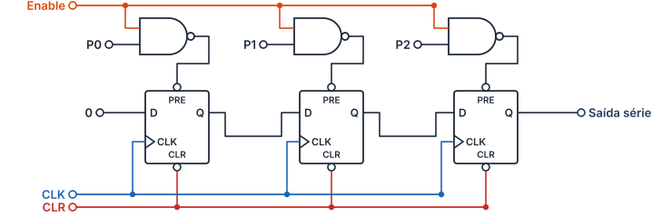
- Zera: CLR = 0 leva todos os Q a 0.
- Carrega: Enable = 1. Cada NAND entrega PRE = Pi, o complemento da entrada paralela. Onde Pi = 1, PRE = 0 e o FF vai a 1; onde Pi = 0, PRE = 1 e o FF continua em 0. Agora Q = P.
- Trava: Enable = 0. Todos os PRE = 1 e o registrador mantém o estado.
- Desloca: a cada pulso de CLK um bit sai pela saída série (Q do último FF). Após n pulsos, a palavra inteira saiu.
Comunicação serial (UART, SPI, USB) usa exatamente essa dupla: paralelo→série no transmissor, série→paralelo no receptor. Deslocar à esquerda/direita também multiplica/divide por 2, e um registrador de deslocamento fechado em anel vira um contador em anel (gerador de sequências).
Registrador de deslocamento de 4 bits (borda ↓), inicialmente zerado. Desenhe Q0…Q3 para a entrada abaixo e diga o conteúdo final.
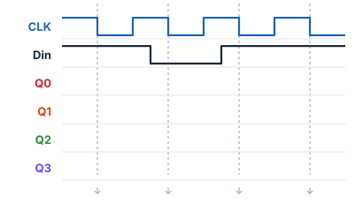
(a) Quantos FFs tem um registrador de 8 bits? (b) Quantos pulsos para converter 5 bits de série para paralelo? (c) Qual tipo de registrador tem mais aplicação em sistemas computacionais?
Memórias
8.1 Vocabulário
Memórias armazenam informação codificada digitalmente: números, caracteres, instruções, endereços. São usadas em computadores e periféricos, e também para implementar funções combinacionais (tabela verdade gravada em ROM), auxiliar contadores e conversores e gerar formas de onda.
| Termo | Significado | Exemplo |
|---|---|---|
| Célula | armazena 1 bit | um flip-flop |
| Palavra | grupo de células acessadas juntas | registrador de 8 bits = palavra de 8 bits |
| Byte | grupo de 8 bits | palavra de 2 bytes = 16 bits |
| Posição | lugar que guarda uma palavra | cada uma tem um endereço |
| Endereço | número binário único que identifica a posição | 000 → P0, 001 → P1, …, 111 → P7 |
| Capacidade | nº de posições × tamanho da palavra | 4096 × 20 = 81 920 bits |
| Volatilidade | volátil perde os dados sem energia; não volátil retém | RAM volátil; ROM/Flash não volátil |
8.2 Contas de capacidade
O número de palavras é sempre potência de 2. Em memória, os prefixos são binários:
| Prefixo | Valor | Potência |
|---|---|---|
| 1K | 1 024 | 2¹⁰ |
| 1M | 1 048 576 | 2²⁰ |
| 1G | 1 073 741 824 | 2³⁰ |
| 1T | 1 099 511 627 776 | 2⁴⁰ |
(1) Chip 2K × 8. Palavras: 2 × 1024 = 2048. Tamanho da palavra: 8 bits (1 byte). Total: 2048 × 8 = 16 384 bits. Endereço: 2048 = 2¹¹, então 11 linhas.
(2) Qual armazena mais: 5M × 8 ou 1M × 16? 5 × 1 048 576 × 8 = 41 943 040 bits; 1 × 1 048 576 × 16 = 16 777 216 bits. A 5M × 8 armazena mais.
Observação: o slide traz “41.493.040”, um erro de digitação; o valor correto é 41 943 040.
8.3 Acesso e barramentos
- Acesso sequencial: percorre-se a memória a partir de um ponto de referência; o tempo depende de onde está o dado (ex.: fita magnética).
- Acesso aleatório: qualquer posição é acessada diretamente, com o mesmo tempo (é o “random” de RAM).
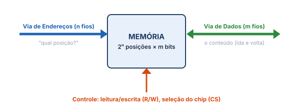
- 011 é colocado na via de endereços;
- um comando read é processado;
- uma cópia do dado (
11010111) vai para a via de dados. O conteúdo não se altera.
- 101 é colocado na via de endereços;
- 10001101 é colocado na via de dados;
- um comando write é processado; o conteúdo antigo é sobrescrito.
8.4 ROM e organização matricial
A ROM (Read Only Memory) é não volátil. Os dados são gravados na fabricação ou eletricamente; o processo se chama programação ou “queima”. Para ler: (1) aplica-se o endereço, por exemplo A3A2A1A0 = 0111; (2) ativam-se as entradas de controle (ex.: CS = 0); (3) a palavra aparece em D7…D0.
| Palavra | A3A2A1A0 | D7…D0 |
|---|---|---|
| 0 | 0000 | 10101110 |
| 1 | 0001 | 10111010 |
| … | … | … |
| 7 | 0111 | 10111010 |
| … | … | … |
| 15 | 1111 | 10101101 |
Trecho da ROM 16 × 8 do slide.
Internamente, os 16 registradores ficam numa matriz 4 × 4. Dois bits do endereço escolhem a linha e dois escolhem a coluna; só o registrador no cruzamento é habilitado.
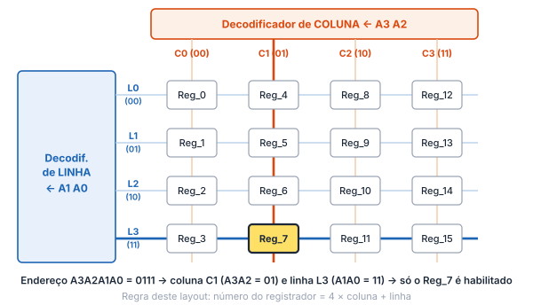
Qual registrador a entrada 1101 habilita? A3A2 = 11 → C3; A1A0 = 01 → L1. Logo, Reg_13 (4·3 + 1).
Qual entrada habilita o Reg_10? 10 = 4·2 + 2 → C2 (A3A2 = 10) e L2 (A1A0 = 10). Entrada 1010.
Um decodificador direto de 4 bits precisaria de 16 saídas. Com linha + coluna são 4 + 4 = 8 linhas de seleção. Para 1M posições: 1 048 576 saídas contra 1024 + 1024. A economia cresce muito com o tamanho.
8.5 Tipos de ROM
| Tipo | Como grava | Regravável? | Observações |
|---|---|---|---|
| ROM por máscara | na fabricação, conectando transistores por uma máscara definida pelo cliente | não | barata só em larga escala; flexibilidade nula |
| PROM | pelo usuário, uma única vez, queimando microfusíveis | não (1 vez) | fusível queimado = nível baixo |
| EPROM | pelo usuário, eletricamente | sim, após apagar com luz ultravioleta | alta densidade; regravada em geral só no desenvolvimento (tem janela de quartzo) |
| EEPROM | eletricamente, com tensão maior que a de operação | sim, apagamento elétrico | mais cara e menos densa |
| Flash | elétrica e rápida | sim, mas apaga por setores, não por palavra | junta vantagens da EPROM e da EEPROM; pendrives e SSDs (NAND Flash, e 3D NAND empilhada para mais capacidade) |
8.6 RAM: SRAM × DRAM
RAM é usada para armazenamento temporário: é volátil e tem leitura e escrita simples e rápidas.
| SRAM (estática) | DRAM (dinâmica) | |
|---|---|---|
| Célula | flip-flop | transistor + capacitor |
| Retenção | enquanto houver alimentação | capacitor descarrega: precisa de refresh periódico |
| Velocidade | mais rápida | mais lenta |
| Custo/complexidade | mais cara e complexa | mais barata e densa |
| Uso | memória cache | memória principal |
(a) Quantos bits armazena uma memória 2K × 16? Quantas linhas de endereço ela tem? (b) Uma memória tem 14 linhas de endereço e 8 de dados: qual a capacidade em bits e em bytes? (c) Na ROM matricial da Figura, que endereço habilita o Reg_6? (d) Por que a DRAM precisa de refresh e a SRAM não?
Máquinas de Estados Finitos (MEF)
9.1 A ideia geral
Tudo o que vimos (latch, contador, registrador) é um caso particular de uma Máquina de Estados Finitos: um circuito com um número finito de estados, que a cada pulso de clock passa para um próximo estado conforme o estado atual e as entradas, e que produz saídas. Recordando a estrutura do Cap. 1:
- Memória (FFs): guarda o estado presente; recebe o próximo estado.
- Lógica combinacional: calcula o próximo estado e a saída a partir do estado presente e das entradas.
Representa-se uma MEF por um diagrama de estados (um grafo: nós = estados, arcos = transições) ou por uma tabela de estados (tabela de transição). Os dois carregam a mesma informação.
9.2 Modelo de Moore
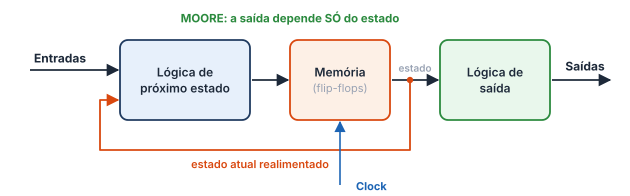
Notação no diagrama: a saída fica dentro do nó (“Estado / Saída”, ex.: A/00); o arco leva só a entrada que causa a transição. Como a saída só muda quando o estado muda, ou seja, na borda do clock, Moore tem resposta mais lenta a variações na entrada (até um ciclo de atraso), mas a saída é estável e livre de glitches das entradas.
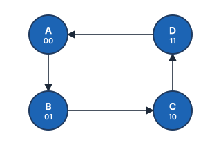
| Estado presente | Saída Z1Z2 | Estado futuro |
|---|---|---|
| A | 00 | B |
| B | 01 | C |
| C | 10 | D |
| D | 11 | A |
4 estados, 2 saídas, nenhuma entrada (só o clock).
9.3 Modelo de Mealy
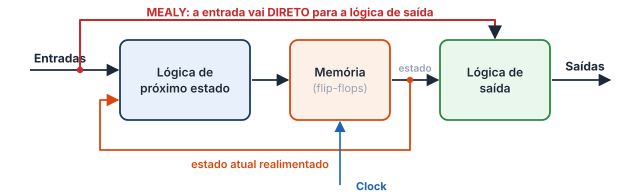
Notação no diagrama: o nó leva só o nome do estado; o arco leva “Entrada / Saída” (ex.: 1/0). A saída reage à entrada no mesmo ciclo, sem esperar o clock: resposta mais rápida, mas a saída pode ter glitches se a entrada tiver.
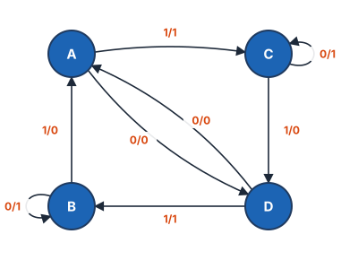
| Estado | Entrada X | |
|---|---|---|
| 0 | 1 | |
| A | D/0 | C/1 |
| B | B/1 | A/0 |
| C | C/1 | D/0 |
| D | A/0 | B/1 |
Leitura: na célula (linha B, coluna 0), “B/1” significa: estando em B com X = 0, a saída é 1 e o próximo estado é B.
9.4 Moore × Mealy lado a lado: detector da sequência “101”
Problema: a entrada X recebe um bit por clock; a saída Z deve valer 1 quando os três últimos bits forem 1, 0, 1 (com sobreposição: em 10101, a sequência aparece duas vezes).
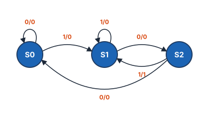
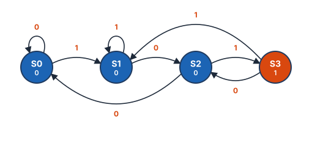
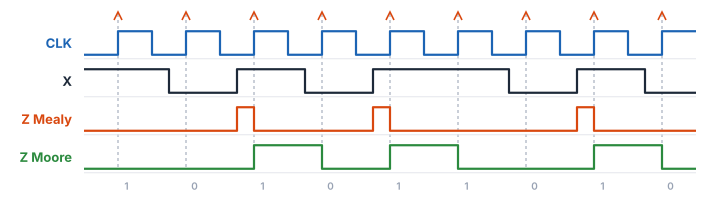
| Moore | Mealy | |
|---|---|---|
| Saída depende de | só do estado | estado e entradas |
| Onde a saída aparece no diagrama | dentro do nó (A/Z) | no arco (X/Z) |
| Resposta à entrada | mais lenta (espera a borda) | mais rápida (no mesmo ciclo) |
| Número de estados | em geral mais | em geral menos |
| Glitches na saída | não (saída síncrona) | pode ter, se a entrada tiver |
9.5 Minimização de estados
Dois estados são equivalentes quando é impossível distingui-los olhando as saídas: para toda entrada, dão a mesma saída e vão para estados equivalentes. Um deles é redundante e pode ser removido, o que reduz custo e complexidade (menos FFs e menos lógica).
Método da inspeção (casos simples)
Procure linhas idênticas na tabela, elimine uma, substitua seu nome em toda a tabela e repita.
| EP | X=0 | X=1 |
|---|---|---|
| A | B/0 | C/1 |
| B | C/0 | A/1 |
| C | D/1 | B/0 |
| D | C/0 | A/1 |
| E | D/0 | C/1 |
| EP | X=0 | X=1 |
|---|---|---|
| A | B/0 | C/1 |
| B | C/0 | A/1 |
| C | B/1 | B/0 |
| E | B/0 | C/1 |
| EP | X=0 | X=1 |
|---|---|---|
| A | B/0 | C/1 |
| B | C/0 | A/1 |
| C | B/1 | B/0 |
Método da partição (sistemático, sempre funciona)
- Partição pelas saídas: agrupe os estados com a mesma linha de saídas.
- Para cada estado, anote em que grupo cai cada próximo estado.
- Se dois estados do mesmo grupo vão para grupos diferentes em alguma coluna, separe-os.
- Repita até nada mudar. Cada grupo final vira um estado.
| EP | X=0 | X=1 |
|---|---|---|
| A | B/0 | C/0 |
| B | D/0 | E/0 |
| C | G/0 | E/0 |
| D | H/0 | F/0 |
| E | G/0 | A/0 |
| F | G/1 | A/0 |
| G | D/0 | C/0 |
| H | H/0 | A/0 |
P1 (saídas): só F tem saída diferente (1 com X=0) → {A,B,C,D,E,G,H}=1, {F}=2.
P2: próximos estados por grupo: D vai para F (grupo 2) com X=1; os outros só vão para o grupo 1 → separa D: {A,B,C,E,G,H}=1, {F}=2, {D}=3.
P3: B → (D,E) = (3,1) e G → (D,C) = (3,1); A, C, E, H → (1,1) → {A,C,E,H}=1, {B,G}=4.
P4: A → (B,C) = (4,1); C → (G,E) = (4,1); E → (G,A) = (4,1); H → (H,A) = (1,1) → separa H: {A,C,E}=5, {H}.
P5: nada muda → A ≡ C ≡ E e B ≡ G.
| EP | X=0 | X=1 |
|---|---|---|
| A | B/0 | A/0 |
| B | D/0 | A/0 |
| D | H/0 | F/0 |
| F | B/1 | A/0 |
| H | H/0 | A/0 |
Na partição, compare grupos, não letras: B → D e G → D estão iguais; A → C e C → E também, se C e E estiverem no mesmo grupo. E só junte estados com a mesma saída desde o início.
9.6 Do enunciado ao circuito: o roteiro completo
- Entenda o problema: quais são as entradas, as saídas e o que o circuito precisa lembrar.
- Escolha o modelo (Moore ou Mealy) e desenhe o diagrama de estados.
- Monte a tabela de estados e minimize.
- Codifique os estados em binário: com k estados, use n FFs com 2ⁿ ≥ k.
- Monte a tabela de transição em binário e, com a tabela de excitação do FF escolhido (Cap. 6), as colunas de entrada dos FFs.
- Simplifique (Karnaugh) as entradas dos FFs e as saídas e desenhe o circuito.
Codificação: S0 = 00, S1 = 01, S2 = 10 (11 não usado = X). Estado = y1y0.
| y1y0 | X | próx. y1y0 = D1D0 | Z |
|---|---|---|---|
| 00 (S0) | 0 | 00 | 0 |
| 00 (S0) | 1 | 01 | 0 |
| 01 (S1) | 0 | 10 | 0 |
| 01 (S1) | 1 | 01 | 0 |
| 10 (S2) | 0 | 00 | 0 |
| 10 (S2) | 1 | 01 | 1 |
| 11 | – | XX | X |
Com FF D, D = próximo estado. Lendo a tabela (e usando o 11 como X):
- D0 = X (toda vez que X = 1 se vai para 01; com X = 0 nunca se termina em y0 = 1)
- D1 = y0 · X (só S1 com X = 0 vai para S2)
- Z = y1 · X (em S2, chegando 1)
Circuito: 2 FFs D, uma AND com NOT para D1 e uma AND para Z. Em Mealy, Z usa X diretamente.
9.7 Os dois casos de projeto da aula
Elevador (16 andares)
O que lembrar: o andar atual (16 andares, então 4 bits) e se está parado, subindo ou descendo. Entradas: andar requisitado (4 bits) e um sinal “há chamada”. Saídas: comandos do motor (subir / descer / parar) e o andar atual.
- Parado e sem chamada, ou chamada = andar atual: continua parado.
- Chamada > atual: sobe 1 andar por clock até igualar; chamada < atual: desce.
Modelo adequado: Moore. A saída (motor) depende de “onde estou e para onde vou”, deve ser estável durante o ciclo e não há urgência de reagir dentro do ciclo. Observe que o andar atual é, na prática, um contador crescente/decrescente de 4 bits, e a decisão sobe/desce/para vem de um comparador entre andar atual e requisitado. Em vez de desenhar 16 × 3 estados à mão, divide-se o problema em blocos: comparador + contador up/down + MEF de controle com 3 estados (PARADO, SUBINDO, DESCENDO).
Máquina de refrigerante (R$ 1,00)
O que lembrar: quanto já foi inserido. Moedas: 10, 25, 50 e 100 centavos (uma por clock). Estados = valores acumulados possíveis até R$ 1,00 (0, 10, 20, 25, 30, 35, …, 100). Entradas: moeda inserida (codificada) e botão. Saídas: liberar lata, devolver dinheiro.
- Moeda que faz passar de R$ 1,00: devolve tudo e volta ao estado 0, mesmo sem apertar o botão.
- Botão apertado no estado 100: libera a lata e volta a 0. Botão em qualquer outro estado: devolve as moedas e volta a 0.
Modelo adequado: Mealy. As ações “libera” e “devolve” são respostas a um evento de entrada (o botão ou a moeda que estoura o valor), naquele ciclo. Em Moore seriam necessários estados extras, como “liberando” e “devolvendo”.
Não. Cada estado a mais pode exigir mais FFs (n = ⌈log₂ k⌉) e mais lógica combinacional, aumentando custo, área, consumo e chance de erro. O objetivo é o menor número de estados que ainda distingue tudo o que importa; é para isso que serve a minimização. Estados extras só valem a pena quando simplificam a lógica de saída (como em Moore, para ter saídas estáveis).
(a) Desenhe uma MEF de Moore que detecte a sequência “11” na entrada X (Z = 1 quando os dois últimos bits forem 1). (b) Faça a versão Mealy. (c) Quantos FFs cada uma precisa?
Minimize pelo método da partição:
| EP | X=0 | X=1 |
|---|---|---|
| A | B/0 | C/0 |
| B | A/0 | D/1 |
| C | D/0 | A/0 |
| D | C/0 | B/1 |
Revisão final, armadilhas e gabarito
10.1 Resumo para a véspera
Fundamentos
- Combinacional: saída = f(entradas agora).
- Sequencial: saída = f(entradas, estado); tem memória e realimentação.
- Astável (0 estados estáveis), monoestável (1), biestável (2) = latch/FF.
- Latch: assíncrono (muda a qualquer hora). FF: síncrono (muda na borda).
Latches RS
| NOR (ativo 1) | NAND (ativo 0) | Ação |
|---|---|---|
| S=0 R=0 | S=1 R=1 | mantém |
| S=1 R=0 | S=0 R=1 | Q=1 |
| S=0 R=1 | S=1 R=0 | Q=0 |
| S=1 R=1 | S=0 R=0 | inválido |
Flip-flops (na borda ativa)
| Tipo | Qpróx |
|---|---|
| D | D |
| T | T ⊕ Q |
| JK | JQ + KQ |
| SR | S + RQ (SR≠11) |
- JK: 00 mantém · 10 set · 01 reset · 11 comuta.
- ▷ = borda; ○▷ = descida. PRE/CLR assíncronos vencem o clock.
Excitação (Q → Qpróx)
| D | T | JK | |
|---|---|---|---|
| 0→0 | 0 | 0 | 0X |
| 0→1 | 1 | 1 | 1X |
| 1→0 | 0 | 1 | X1 |
| 1→1 | 1 | 0 | X0 |
Tempo
- f = 1/T; duty = talto/T.
- tr, tf: 10%→90%. tw: 50%↔50%.
- tS antes da borda, tH depois: entrada parada.
- tPLH (0→1), tPHL (1→0).
Contadores
- n FFs → até 2ⁿ estados; MOD-N precisa de 2ⁿ ≥ N.
- Assíncrono: CLK só no 1º; Qi → CLKi+1 (borda ↓ = crescente).
- MOD-N: NAND dos bits 1 de N → CLR.
- fMSB = fCLK/MOD. Decrescente = ler Q.
- Síncrono: CLK comum; Ti = Q0…Qi−1.
- Ripple: atraso N·tPD; síncrono: 1·tPD.
Registradores
- n bits = n FFs D.
- Paralelo: 1 pulso, n fios. Série: n pulsos, 1 fio.
- LOAD: D = LOAD·Dnovo + LOAD·Q.
- Shift: Qi → Di+1; o 1º bit a entrar termina no último FF.
- P→S: carrega via PRE = NAND(EN, P), depois desloca.
Memórias
- Capacidade = posições × bits/palavra.
- n linhas de endereço → 2ⁿ posições. 1K = 2¹⁰.
- ROM: não volátil. Máscara → PROM (fusível, 1×) → EPROM (UV) → EEPROM (elétrica) → Flash (setores).
- SRAM: FF, rápida, cache. DRAM: capacitor, refresh, principal.
MEF
- Moore: Z = f(estado); nó “A/Z”; mais lento, mais estados.
- Mealy: Z = f(estado, X); arco “X/Z”; mais rápido, menos estados.
- Equivalentes: mesma saída e próximos equivalentes, para toda entrada.
- Partição: separa por saída e refina por grupos dos próximos estados.
10.2 Armadilhas clássicas
- Confundir a ordem das colunas S/R nas tabelas dos latches (positivo: R primeiro; negativo: S primeiro, nos slides).
- Esquecer que entradas com barra (S, CLR, PRE) são ativas em 0.
- Atualizar Q fora da borda, ou na borda errada (bolinha = descida).
- Usar os valores de J, K, D depois da borda em vez de antes.
- Em MOD-N, colocar na NAND o número n (último) em vez de n + 1 (o primeiro proibido).
- Ler o contador com o LSB à esquerda: Q0 é o LSB.
- Em capacidade, usar 1K = 1000: em memória, 1K = 1024.
- Achar que “Mealy” e “Moore” são só desenhos diferentes: em Mealy a saída pode mudar no meio do ciclo quando X muda.
10.3 Gabarito
1.1 (a) combinacional; (b) sequencial (precisa lembrar a contagem); (c) combinacional; (d) sequencial (precisa lembrar os dígitos já digitados, como as lâmpadas).
2.1
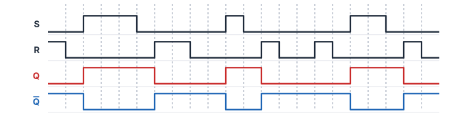
2.2 (a) Porque a saída muda assim que as entradas mudam, sem esperar clock. (b) NOR com S = R = 1 dá Q = Q = 0; NAND com S = R = 0 dá Q = Q = 1; nos dois, as saídas deixam de ser complementares e, se os comandos forem retirados juntos, o estado final é imprevisível. (c) Porque, com as entradas em repouso, a realimentação sustenta o último valor indefinidamente.
3.1 (a) T = 1/30 MHz ≈ 33,3 ns. (b) 12/40 = 30%. (c) Sim: D mudou 10 ns antes da borda, mas precisava estar estável há pelo menos tS = 20 ns. O valor capturado não é garantido.
4.1
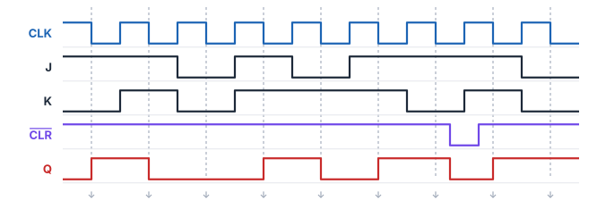
4.2 (a) 8/2 = 4 MHz. (b) T: J = K = T. D: J = D e K = D. (c) Por causa do estado inválido S = R = 1; o JK resolve isso.
5.1
- MOD-3: 2 FFs; 3 = 11 → NAND(Q1, Q0) → CLR. Crescente: 0, 1, 2. Lendo Q (como no slide) obtém-se 3, 2, 1, uma decrescente de 3 estados. Para 2, 1, 0 exatamente: monte o contador decrescente (Cap. 5.5, Aprofundando) e, quando ele passar de 0 para 3 (11), use a NAND(Q1, Q0) para carregar 10 de forma assíncrona: PRE no FF1 e CLR no FF0.
- MOD-12: 4 FFs; 12 = 1100 → NAND(Q3, Q2). Lendo Q: 15…4. Para 11…0: contador decrescente que, ao chegar em 15 (1111), carrega 1011 (PRE em Q3, Q1, Q0; CLR em Q2).
- 50 MHz → 1 Hz exige dividir por 50 000 000. Como 2²⁵ = 33 554 432 < 50 000 000 ≤ 2²⁶ = 67 108 864, são 26 FFs, num contador MOD-50 000 000 (NAND com os bits 1 de 50 000 000 = 10111110101111000010000000₂ → CLR). Só com potências de 2 não se chega a 1 Hz exato (2²⁶ daria ≈ 0,745 Hz).
- Cada década divide por 10: 7 décadas → 50 MHz/10⁷ = 5 Hz; falta um MOD-5 (3 FFs). Total 7 × 4 + 3 = 31 FFs, com o projeto mais simples e modular. (Com 8 décadas: 0,5 Hz.)
6.1 (a) T0 = 1, T1 = Q0, T2 = Q0Q1, T3 = Q0Q1Q2, T4 = Q0Q1Q2Q3. (b) Sequência 000 → 010 → 100 → 110 → 000: Q0 fica sempre em 0 → T0 = 0; Q1 comuta sempre → T1 = 1; Q2 comuta quando Q1 = 1 → T2 = Q1. (c) No assíncrono o atraso seria 16 × tPD; no síncrono, um único tPD mais a lógica: muito mais rápido e sem estados intermediários falsos.
7.1
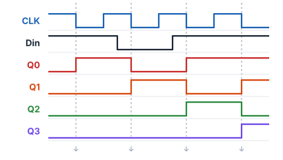
7.2 (a) 8 FFs. (b) 5 pulsos. (c) O de carga paralela, base dos registradores internos de processadores e de barramentos; os de deslocamento aparecem na comunicação serial.
8.1 (a) 2048 × 16 = 32 768 bits; 2048 = 2¹¹ → 11 linhas. (b) 2¹⁴ = 16 384 posições × 8 = 131 072 bits = 16 384 bytes = 16 KB. (c) 6 = 4·1 + 2 → C1 (A3A2 = 01) e L2 (A1A0 = 10) → 0110. (d) A DRAM guarda o bit como carga num capacitor, que vaza com o tempo; a SRAM usa um flip-flop, que se sustenta por realimentação enquanto houver alimentação.
9.1 (a) Moore: S0/0 (último bit 0 ou início), S1/0 (viu um 1), S2/1 (viu 11). X = 1: S0→S1, S1→S2, S2→S2. X = 0: todos → S0. (b) Mealy: S0 (último 0), S1 (último 1). S0: 0/0→S0, 1/0→S1; S1: 0/0→S0, 1/1→S1. (c) Moore: 3 estados → 2 FFs; Mealy: 2 estados → 1 FF.
9.2 P1 pelas saídas: {A, C} (saídas 0,0) e {B, D} (saídas 0,1). P2: A → (B, C) = (grupo BD, grupo AC); C → (D, A) = (BD, AC): iguais. B → (A, D) = (AC, BD); D → (C, B) = (AC, BD): iguais. Nada muda: A ≡ C e B ≡ D. Tabela mínima: A: 0 → B/0, 1 → A/0; B: 0 → A/0, 1 → B/1 (2 estados, 1 FF).
Refaça à mão, sem olhar: (1) formas de onda de um latch NOR e de um JK com CLR; (2) um contador assíncrono MOD-N qualquer; (3) as equações T de um síncrono; (4) uma conta de capacidade; (5) um diagrama Moore e um Mealy para a mesma sequência; (6) uma minimização por partição. Esses seis itens cobrem quase tudo que costuma cair.